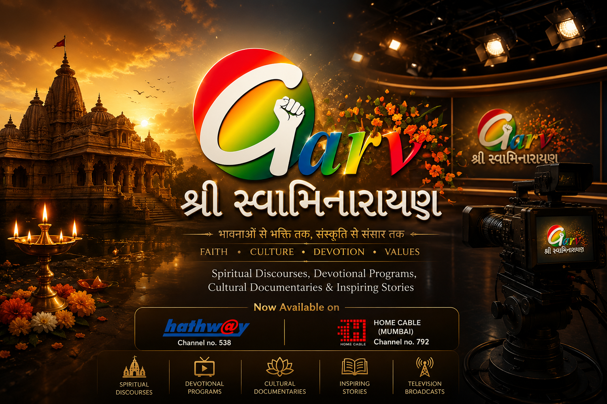
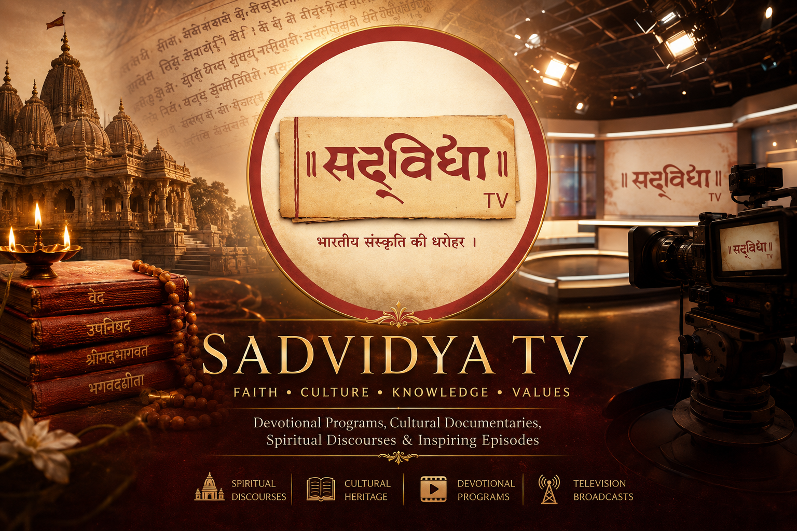
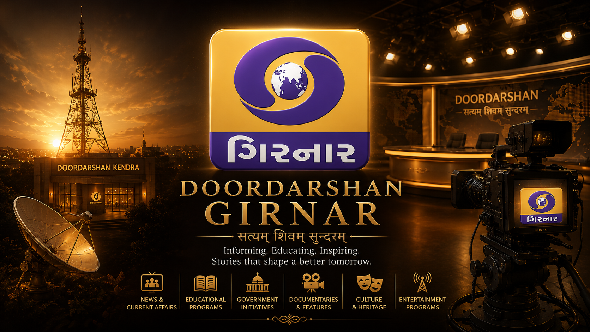
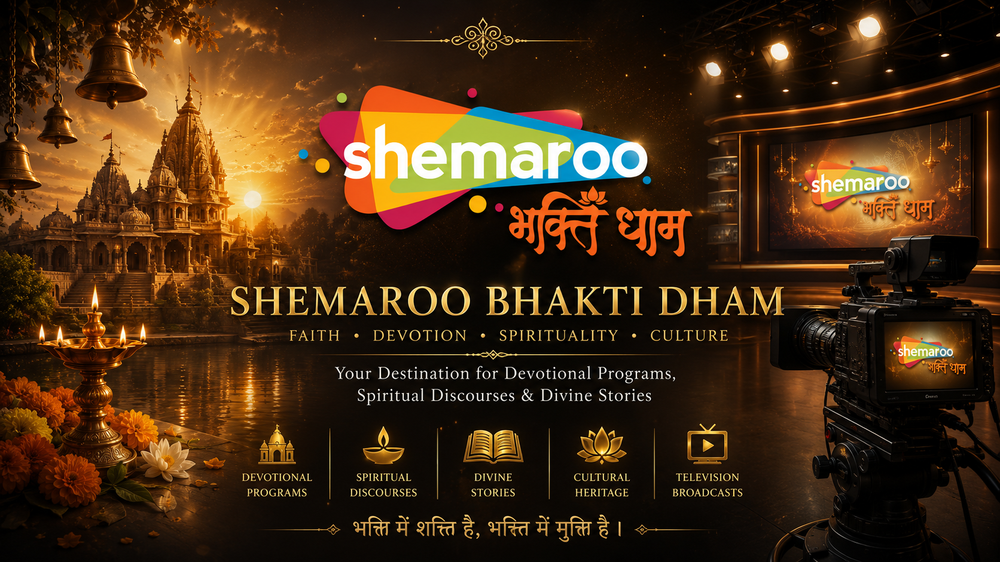

Garv Shree Swaminarayan
A leading Gujarati spiritual television channel dedicated to Sanatan Dharma. Contributed as Writer, Program Head, Voice Artist, and Anchor, creating devotional programs and spiritual content.
View Playlist →For over a decade, Shabdvid has collaborated with leading television channels and production houses, creating documentaries, devotional programs, promotional films and broadcast content that has reached audiences across India.
Every collaboration represents a journey of storytelling, devotion, culture and meaningful communication through the powerful medium of television.

A leading Gujarati spiritual television channel dedicated to Sanatan Dharma. Contributed as Writer, Program Head, Voice Artist, and Anchor, creating devotional programs and spiritual content.
View Playlist →
A Gujarati spiritual and educational television channel promoting devotional, cultural, and value-based programming. Served as Anchor, Writer, Program Head, and Voice Artist, creating impactful television shows, innovative concepts, and engaging digital content.
View Playlist →
A trusted public broadcasting news platform under Prasar Bharati, delivering regional news, public information, and cultural programming. Served as Anchor, Writer, Copywriter, and Social Media Content Creator, developing news content, scripts, and digital communication.
View Playlist →
One of India's leading devotional digital platforms, offering spiritual content, live darshan, bhajans, and faith-based programs. Contributed through a production house as a Scriptwriter, creating meaningful devotional stories and spiritual content for digital audiences.
View Playlist →Every great story deserves to be told with purpose, creativity and cinematic excellence. Whether it's a television programme, documentary, corporate film or promotional campaign, let's create something truly memorable together.
Start Your Project